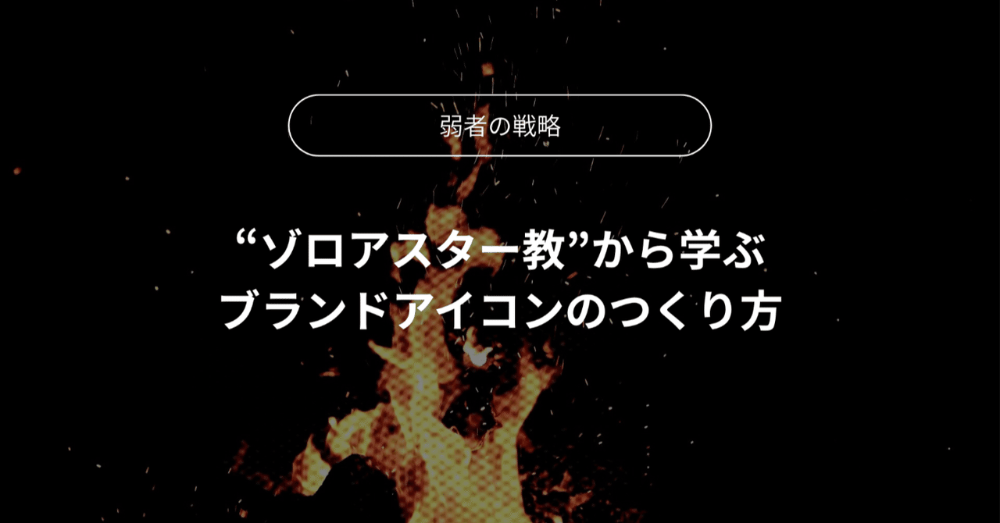
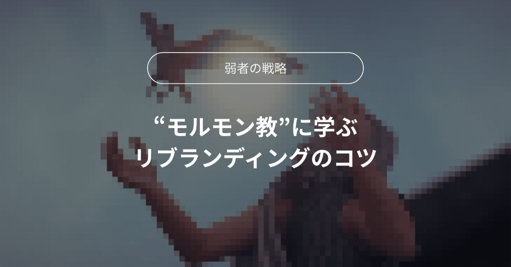

鯉
Home
Works
Blog
About me
BLOG
宗教学 × マーケティング
宗教とマーケティングに関するブログを書いています。

Zoroastrianism
ゾロアスター教から学ぶ ― 宗教とマーケティングにおける"アイコン"の力
note で読む →

Mormonism
モルモン教から学ぶ ― ブランドストーリーをどう"解釈"するか
note で読む →
Islam
イスラム教のグロース速度に学ぶ ― ブランドが初期ユーザーを獲得する方法
note で読む →